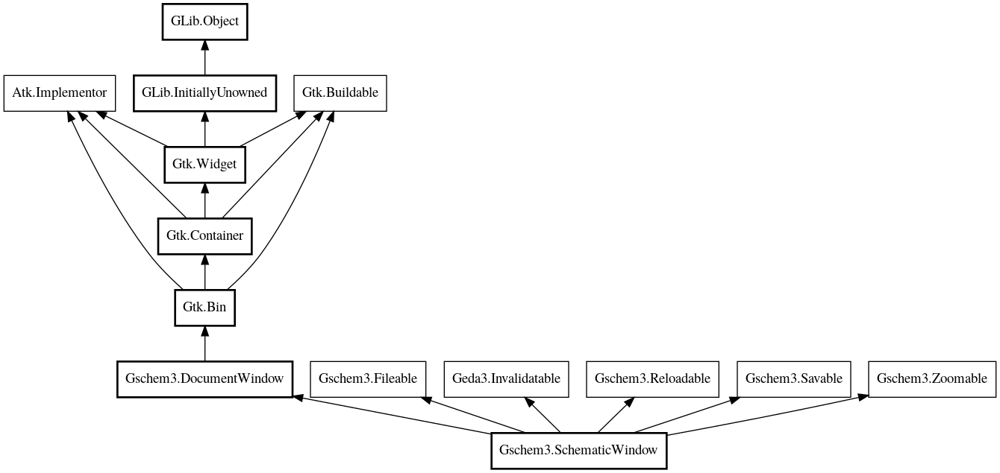

SchematicWindow
Object Hierarchy:

Description:
A document window for editing a gschem schematic
Content:
Constants:
Properties:
- public bool can_reload { protected set; get; }
Indicates the document can be reloaded
- public bool changed { protected set; get; }
Indicates the document has changed since last saved
- public File? file { protected set; get; }
The underlying file for the schematic
- public string? file_id { protected set; get; }
- A unique string identifing the file
- public bool modified { protected set; get; }
- Indicates the file has been modified
- public Collection<SchematicItem>? selection { owned get; }
- public SchematicWindowSettings settings { set; get; }
The settings for use by this schematic window
Static methods:
Creation methods:
Methods:
- public void clear_selection ()
Unselect all items
- public SchematicItem? closest_item (int x, int y, double distance)
Find the closest item the the given coordinates
- public void add_item (SchematicItem item)
Add an item to the schematic
- public void device_to_user (ref double x, ref double y)
Convert device coordinates to user coordinates
- public void device_to_user_distance (ref double dx, ref double dy)
Convert device displacement to user displacement
- public void invalidate_bounds (Bounds bounds)
Invalidate an area of the window in user coordinates
- public void invalidate_device (double x0, double y0, double x1, double y1)
- public void invalidate_item (SchematicItem item, bool reveal)
Invalidate an item in the window
- public void on_invalidate_item (SchematicItem item)
- public void invalidate_user (Bounds bounds)
Invalidate an area of the window in user coordinates
- public void reload (Window? parent) throws Error
Reloads the document from the file
- public void pan_delta (int dx, int dy)
Pan a point to the center of the window
- public void pan_point (int x, int y)
Pan a point to the center of the window
- public void save (Window? parent) throws Error
Save the document in the window
- public void save_as (Window? parent) throws Error
Save the document in the window with another filename
- public void scale_grid_down ()
- public void scale_grid_up ()
- public void select_all ()
Select all items in the schematic
- public void select_box (Bounds box)
Select items using a box
- public void select_grid (string name)
Select a drawing grid for this window
- public void select_item (SchematicItem? item, bool toggle)
Places a single item in the selection
- public int snap_angle (int angle)
Snap an angle using the current snap mode
- public void snap_point (ref int x, ref int y)
Snap a point to the grid of this window
- public void user_to_device (double ux, double uy, out double dx, out double dy)
Convert user coordinates to device coordinates
- public void zoom_box (double x0, double y0, double x1, double y1)
Zoom to a box
- public void zoom_extents ()
Zoom the schematic to fit the view
- public void zoom_in_center ()
Zoom in on the center of the window
- public void zoom_in_point (int x, int y)
Zoom in and center point in window
- public void zoom_out_center ()
Zoom out on the center of the window
- public void zoom_out_point (int x, int y)
Zoom out and center point in window
- public void on_color_scheme_changed (ColorScheme scheme)
Event handler for when the color scheme changes
Signals:
Fields:
Inherited Members:
All known members inherited from class Gschem3.DocumentWindow
All known members inherited from class Gtk.Bin
All known members inherited from class Gtk.Container
- border_width
- child
- resize_mode
- class_find_child_property
- class_list_child_properties
- find_child_property
- handle_border_width
- install_child_properties
- install_child_property
- list_child_properties
- add_with_properties
- child_get
- child_get_property
- child_get_valist
- child_notify
- child_notify_by_pspec
- child_set
- child_set_property
- child_set_valist
- child_type
- composite_name
- forall
- forall_internal
- @foreach
- get_border_width
- get_child_property
- get_children
- get_focus_chain
- get_focus_child
- get_focus_hadjustment
- get_focus_vadjustment
- get_path_for_child
- get_resize_mode
- propagate_draw
- resize_children
- set_border_width
- set_child_property
- set_focus_chain
- set_focus_hadjustment
- set_focus_vadjustment
- set_reallocate_redraws
- set_resize_mode
- unset_focus_chain
- add
- check_resize
- remove
- set_focus_child
All known members inherited from class Gtk.Widget
All known members inherited from class GLib.Object
- interface_find_property
- interface_install_property
- interface_list_properties
- @new
- new_valist
- newv
- new_with_properties
- add_toggle_ref
- add_weak_pointer
- bind_property
- connect
- constructed
- disconnect
- dispose
- dup_data
- dup_qdata
- force_floating
- freeze_notify
- @get
- get_class
- get_data
- get_property
- get_qdata
- get_type
- getv
- is_floating
- notify_property
- @ref
- ref_sink
- replace_data
- replace_qdata
- remove_toggle_ref
- remove_weak_pointer
- @set
- set_data
- set_data_full
- set_property
- set_qdata
- set_qdata_full
- set_valist
- setv
- steal_data
- steal_qdata
- thaw_notify
- unref
- watch_closure
- weak_ref
- weak_unref
- notify
- ref_count
All known members inherited from interface Gschem3.Fileable
All known members inherited from interface Geda3.Invalidatable
All known members inherited from interface Gschem3.Reloadable
All known members inherited from interface Gschem3.Savable
All known members inherited from interface Gschem3.Zoomable
All known members inherited from interface Atk.Implementor
All known members inherited from interface Gtk.Buildable
- add_child
- construct_child
- custom_finished
- custom_tag_end
- custom_tag_start
- get_internal_child
- get_name
- parser_finished
- set_buildable_property
- set_name